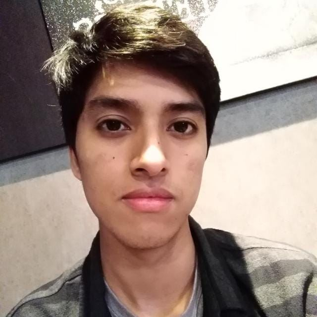
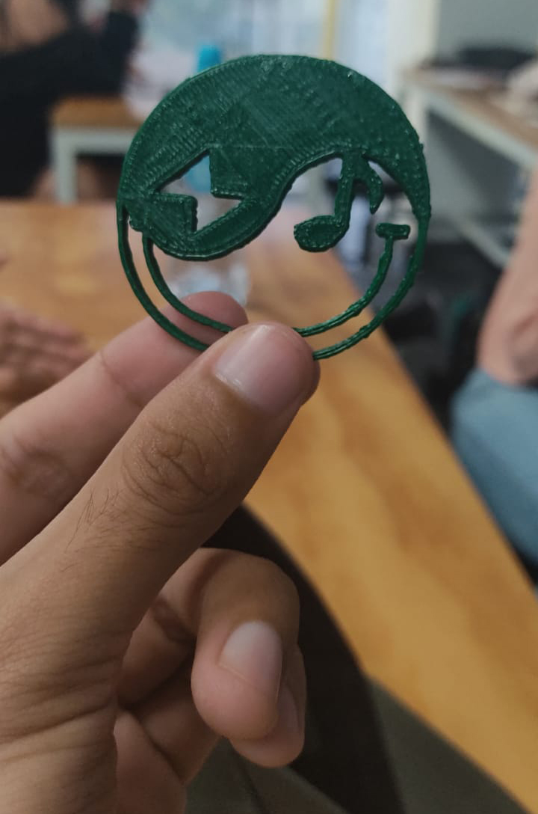

| > |
¿Quién soy?:
Hola, soy una persona repsonsable que le gusta crear piezas creativas con diseños
originales para poder expresar sentimientos y emociones a las persona. |
 |
¿Qué espero poder lograr en el curso?
Quiero aprender todo lo que pueda sobre crear páginas web ya que me gustaría en el futuro ofrecer servicios de creación de páginas a empresas o personas con
emprendimientos los cuales requieran de alguien creativo no solo para diseñar su marca, si no también alguien que pueda crear sus páginas web.
|
|  |
Símbolo 3D
En mi grupo de trabajo hicimos una representación gráfica que pudimos materializar mediante las impresoras 3d, nuestro símbolo representa el equilibro que tenemos
todos como personas innovadoras y creativas para poder manejar situaciones en las cuales nos veamos expuestos.
|